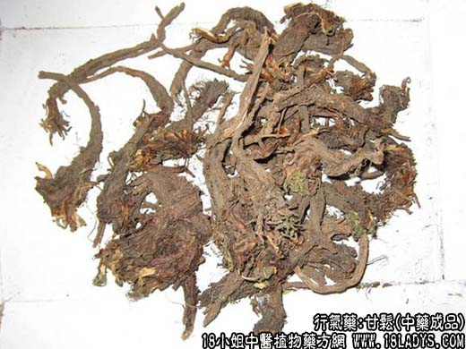

【中药概述】
甘松，别名：香松、甘松香，为败酱科草本植物甘松的根茎。辛、甘，温。归脾、胃经。
行气止痛，健脾强胃：用于胸腹疼痛，食欲不振，头痛、脚气等症，可与香附，砂仁，乌药，丁香，藿香，官桂，麦芽，甘草，陈皮等配伍。如（<和剂局方>大七香丸）。
【药物形态】
本品略呈圆锥形，多弯曲，长5～18cm。根茎短小，上端有茎、叶残基，呈狭长的膜质片状或纤维状。外层黑棕色，内层棕色或黄色。根单一或数条交结、分枝或并列，直径0.3～lcm。表面棕褐色，皱缩，有细根和须根。质松脆，易折断，断面粗糙，皮部深棕色，常成裂片状，木部黄白色。气特异，味苦而辛，有清凉感。
【药效鉴别】甘松芳香开脾郁，主要用于脾胃气滞，脘腹胀痛，专理气。
【药理作用】有镇静、安定作用，能松弛支气管平滑肌，对胃肠道运动呈现抑制作用。
【化学成分】含挥发油、缬草酮、缬草碱、甘松香酮、马兜铃烯等。
【用量用法】2——10g，水煎服，或入丸、散剂。
【使用注意】气虚血热者忌用。
【附】缬草（为败酱科植物缬草、黑水缬草的根状茎）。性味同甘松。安神理气止痛。适用于神经衰弱、失眠等症。还可用治胃痛、腰痛、跌打损伤等。3～8g，水煎服。外用适量。
【临证应用】用治神经衰弱、失眠。取本品五味子各30g，泡酒500毫升，每服10毫升。
【化学成分】含挥发油，主成分为异戊酸龙脑酯。